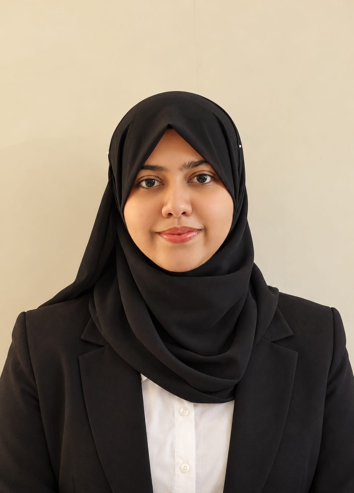

B.Tech in Computer Engineering
Shah and Anchor Kutchhi Engineering College, Mumbai
Direct second-year admission
COMPUTER ENGINEERING · MUMBAI, INDIA
B.Tech Computer Engineering Student
I enjoy building practical software solutions and exploring how technology, artificial intelligence, and thoughtful design can solve real-world problems.

A LITTLE ABOUT ME
I am a Computer Engineering undergraduate at Shah and Anchor Kutchhi Engineering College, with a strong foundation built through my Diploma in Computer Engineering, completed with 93.12%.
I gained practical industry exposure during a three-month internship at Hertzsoft, where I worked across web development, Python, data science, and Generative AI. I am passionate about continuous learning, collaborating with others, and developing useful, user-focused applications.
ACADEMIC BACKGROUND
Shah and Anchor Kutchhi Engineering College, Mumbai
Direct second-year admission
M.H. Saboo Siddik Polytechnic, Mumbai
93.12% · MSBTE
Al-Muminah School
TOOLS & TECHNOLOGIES
C · C++ · Python · Java
HTML · CSS · JavaScript · Bootstrap · Flask · React (basic)
Android Studio (intermediate)
pandas · NumPy · Matplotlib
MySQL · VS Code · Git · GitHub
MS Word · Excel · PowerPoint
INDUSTRY EXPOSURE
Intern · Web Development, Python, Data Science & Generative AI
SELECTED WORK
An AI-integrated safety application designed to improve personal safety through SOS alerts, real-time GPS location sharing, threat analysis, and emergency notifications.
Co-authored research paper published in IJPREMS · February 2026
View publication DOI ↗A study-planning application to help students organize subjects, tasks, and examination deadlines, manage available study time, and monitor progress.
A proposed searchable personal knowledge system for organizing saved notes and information in one centralized place, making personal knowledge easier to retrieve.
CONTINUOUS LEARNING
BEYOND THE CODE
English (Fluent) · Hindi (Fluent) · Urdu (Fluent) · Marathi (Reading)
Web development · Artificial intelligence · App development · Open-source contribution · Exploring new places · Coding
LET'S CONNECT
I am always interested in learning, collaborating, and exploring meaningful opportunities in technology.